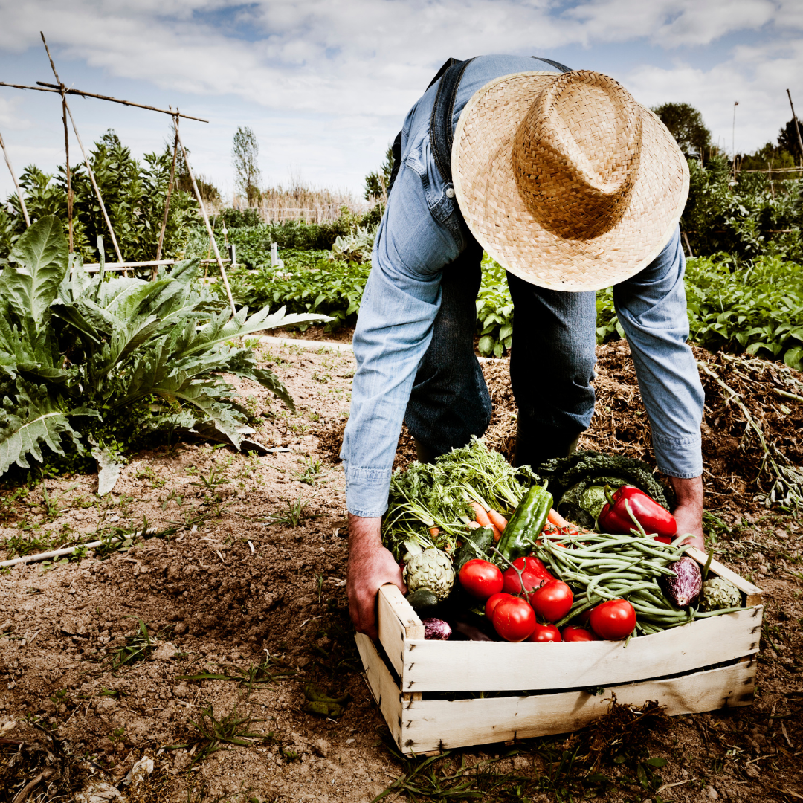
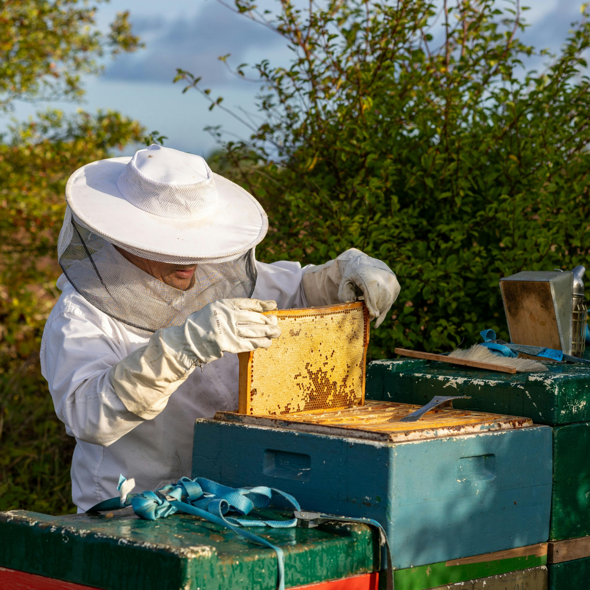
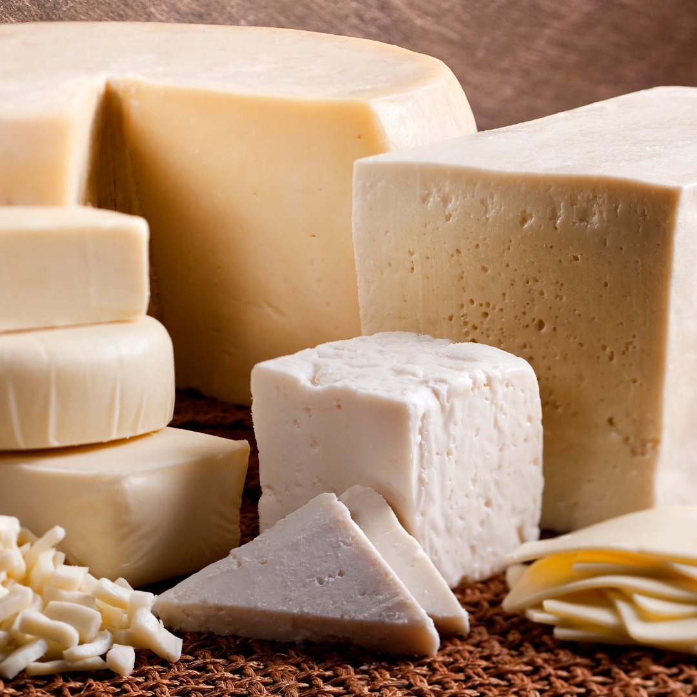
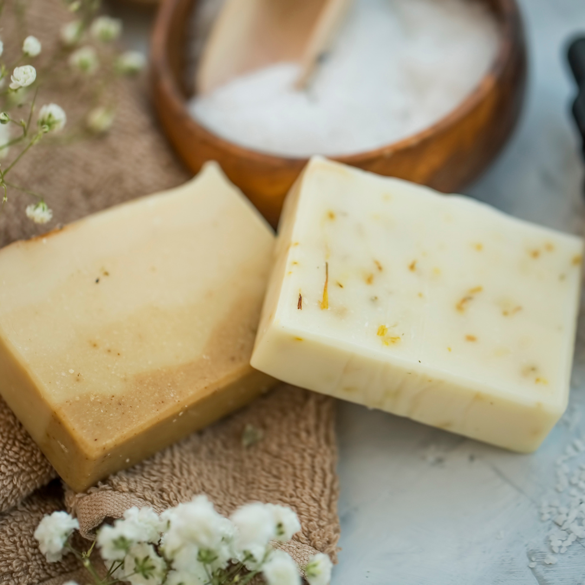
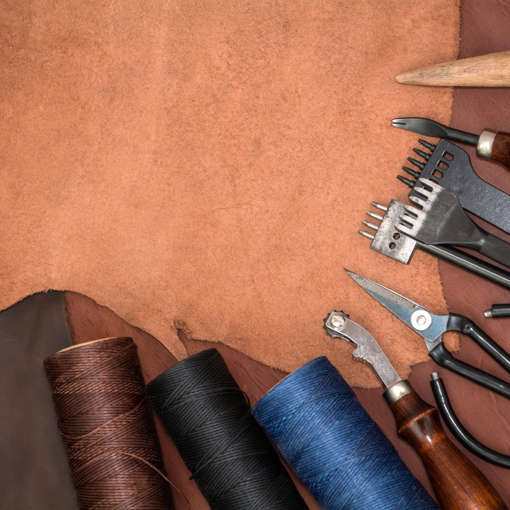
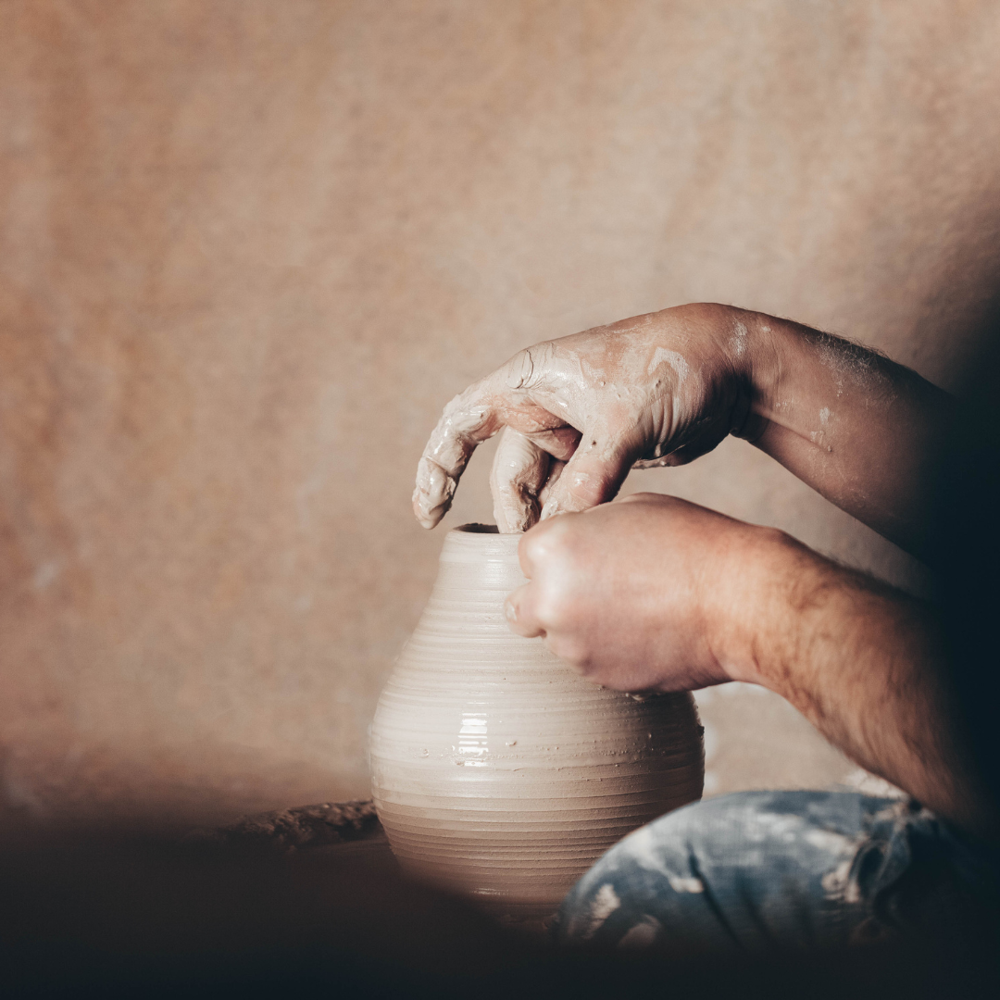
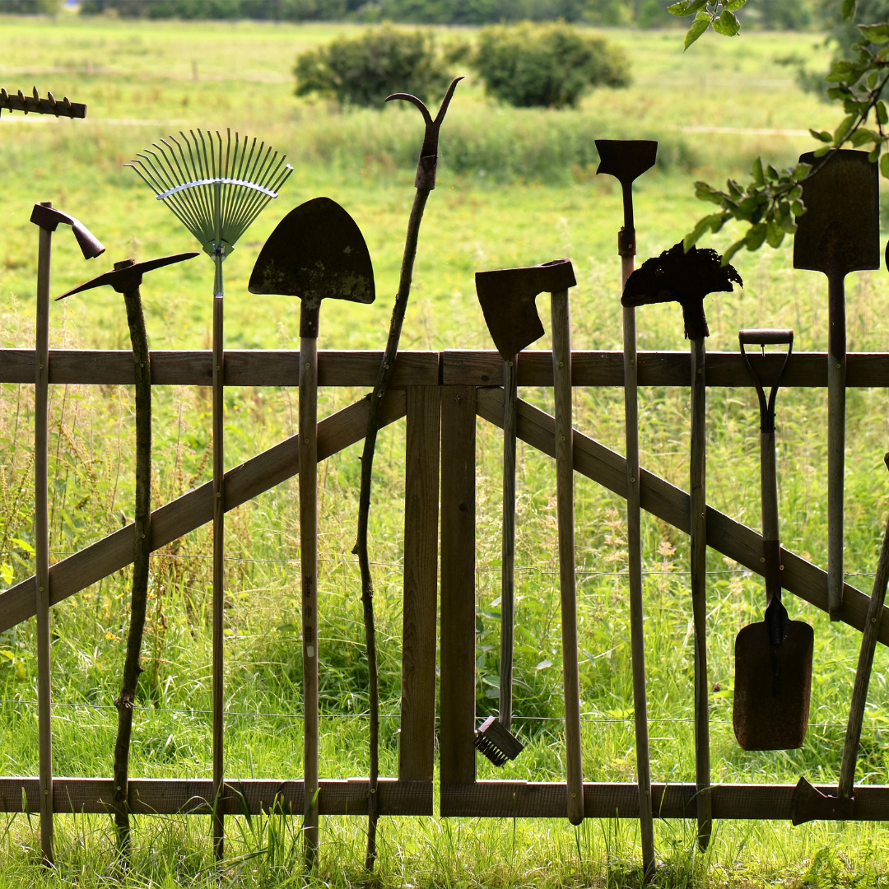

🥕Cultivo

🐝Apicultura
🧶Textil

🧀Quesos
🧺Cestería

🧼Jabones
🥫Conservas

👞Cuero

🏺Cerámica

🌾Y más...
🌿 Conectamos a los que trabajan con las manos, la tierra y el oficio
Si haces miel, jabones, cultivas plantas o trabajas el cuero… y a veces te sientes solo, con dudas o sin red… este proyecto es para ti.
- 🌱 Resolver dudas reales del día a día
- 🔧 Compartir lo que funciona (y lo que no)
- 🤝 Conectar con gente que vive del oficio artesanal y del campo
Estamos creando una comunidad práctica y cercana. Sin postureo. Sin fórmulas mágicas. Sin ruido. Solo ayuda real entre personas reales.
Si quieres formar parte desde el principio, deja aquí tu contacto. No vendemos nada. Solo buscamos a gente como tú.
✍️ Quiero apuntarme al grupo de lanzamiento